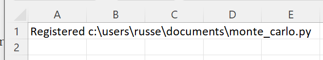
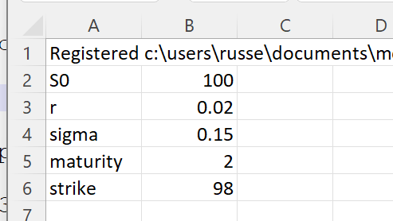
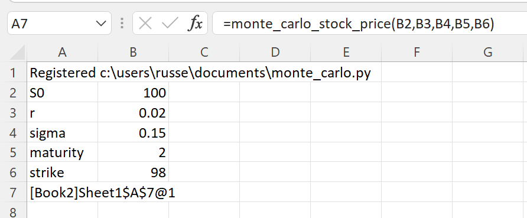
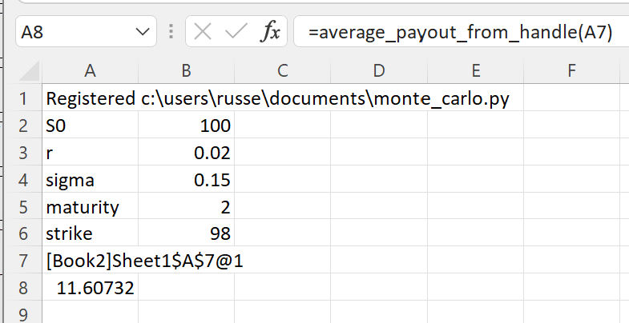

Monte Carlo Option Pricing¶
The Python numpy and pandas packages can be used to very elegantly perform Monte Carlo option pricing. xlSlim allows us to easily call the Python option pricer from Excel.
Warning
The numpy and pandas functionality shown requires a premium licence. See Licensing
We will use this Python code to run the simulations.
# xlslim examples of Monte Carlo Simulations
import pandas as pd
from typing import Optional
from numpy import exp, sqrt, mean
from numpy.random import default_rng
def monte_carlo_stock_price(
s0: float,
r: float,
sigma: float,
mat: float,
strike: Optional[float] = 0.0,
N: Optional[int] = 10000,
) -> pd.DataFrame:
"""
s0: current stock price
r: interest rate for discounting
sigma: stock volatility
mat: option maturity
strike: optional strike to calculate call option payout
N: optional number of simulations
"""
assert mat > 0, "Maturity should be positive"
rng = default_rng(seed=11)
z = rng.standard_normal(size=N)
df_stock = pd.DataFrame(
data={'sim_stock': s0*exp((r-0.5*sigma*sigma)*mat + sigma*sqrt(mat)*z)})
if strike != 0.0:
df_stock['payout'] = df_stock.apply(
lambda x: exp(-r*mat)*max((x.sim_stock-strike), 0.0), axis=1)
return df_stock
def average_payout(df: pd.DataFrame) -> float:
assert 'payout' in df.columns, "Passed Dataframe should have payout column"
return mean(df['payout'])
if __name__ == "__main__":
mc = monte_carlo_stock_price(100.0, 0.02, 0.15, 2.0, 98.0)
print(f"Call option price {average_payout(mc)}")
Note
All the Python code and Excel files shown are available from github in the xlslim-code-samples repo.
Save the Python code as a new file on your PC. I saved the file in my Documents folder.
Open Excel and enter this RegisterPyModule() formula (amending the location to match where you saved the file):
=RegisterPyModule("c:\users\russe\documents\monte_carlo.py","C:\Users\russe\anaconda3\envs\py37")
Note
pandas and numpy are not available in the Python installation bundled with xlSlim. The Python module must be registered with an existing Python installation that has pandas and numpy installed.
You should see a message similar to this confirming the module registration:
{kind=link}
The monte_carlo_stock_price() and average_payout() functions are now available in Excel.
Next we enter the properties of our option trade:
{kind=link}
Then we can create the simulated prices and option payoffs.
{kind=link}
As usual, ViewPyObject() can be used to view the data in Excel:
=ViewPyObject(A7)
{kind=link}
Remove the ViewPyObject(). Pass the simulated prices and option payoffs into the average_payout() function using the cache object handle in A7:
=average_payout_from_handle(A7)
This gives us the call option price:
{kind=link}